The core of your game will be created from assets added to the Asset Browser located by default on the right of the IDE. This is where you can add everything that your game requires to run, including a game room, sprites, objects, paths and a number of other things. A basic game in GameMaker Studio 2 will require a room to run in (new projects will always be created with a room asset already created), and usually at least one object and a sprite, although you'll likely use a lot more! 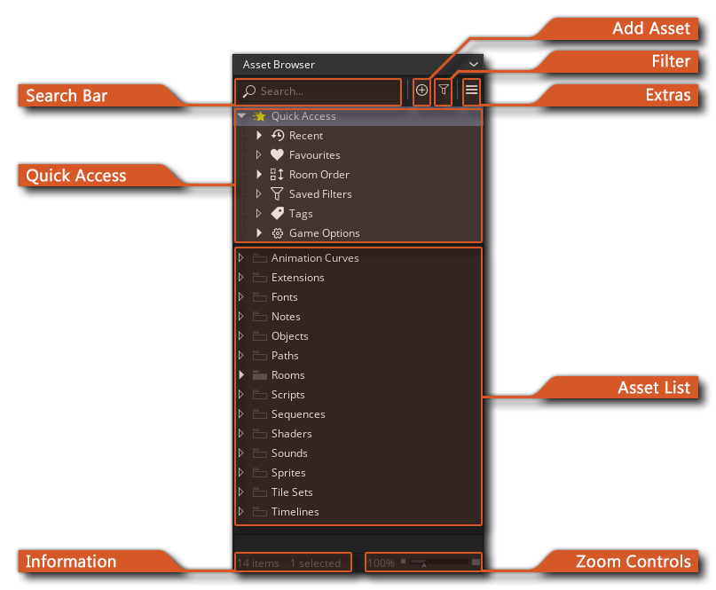
The Asset Browser is where you'll create and organise the assets for your game as well as modify certain other aspects like platform specific sttings and configurations. Below you can find explanations of each of the different sections.
Search Bar
The Search Bar is where you can type in some text and use it to filter what is shown in the main asset list below. For example, typing "room" will show you all the assets that contain "room" in their name. To reset the asset list back to it's default view, simply delete any text from the search bar.
Add Asset
With the Add Asset button you can choose to add a new asset to the asset list. Clicking this will open the following window: 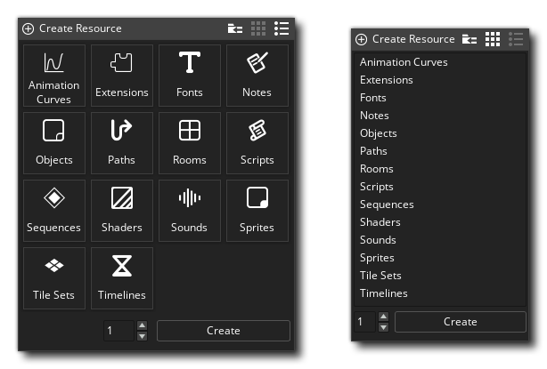
You can choose which of the two views above to use by clicking either the list icon or grid icon, and you can also click the Import icon to import an already existing asset from another project. If you don't want to import anything, then simply select the asset you want to create and click the Create button at the bottom. Note that you are not limited to adding only a single asset here, as you can set the number to create at the bottom of the window, and then click Create and that number of the chosen asset will be added to the asset browser for you. All assets created in this way will be added to the bottom of the asset list, outside of any folders, and also will be opened in the current workspace ready for editing.
The assets that you can add here are listed further down in this section of the manual.
Filter
Clicking the Asset Filter button will open the following window: 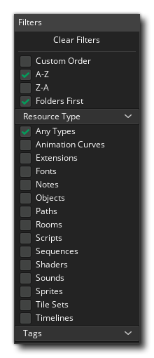
Here you can choose how to filter and display the assets listed in the asset browser. You can order them from A - Z or from Z - A as well as choose to order the folders first and then the assets within the folders, or order everything altogether. If you select the Custom Order filter, then you can select one or more assets and drag them up or down the asset browser tree and position them as you require (note that the "folders first" option will be disabled).
You can also select one or more asset type to filter and only the assets that are in the project of those types will be shown in the asset list. Selecting "Any Type" will reset the filter. You can also filter using any tags that you have assigned (tags are discussed further down in this section of the manual). Note that if you have selected any filter other than "Any Type" then the filter button will change colour to give a visual indication that filtering is active.
Extras
The extras menu permits you to open the following windows (each of which is discussed separately on the linked pages):
Quick Access
This section of the asset browser is used to give you various methods to quickly access important or frequently used assets, and is split into the following sections:
- Recent: Here you can find a list of the most recently
used assets. By default a maximum of 10 assets will be listed here,
but you can change this from the Asset
Browser Preferences.
- Favourites: Once you have added some assets to the asset
list, you may have some that you access frequently at any given
time and so to make things easier you can flag these assets as
"favourites", which will add them to this list and let you quickly
find them. To flag an asset as a favourite use the right mouse
button
 on it and select Favourite from
the pop-up menu. Note that you can use the right mouse button
again to Unfavourite any asset, and if you use the button on
the main Favourites folder, you can select Clear All to
remove everything.
on it and select Favourite from
the pop-up menu. Note that you can use the right mouse button
again to Unfavourite any asset, and if you use the button on
the main Favourites folder, you can select Clear All to
remove everything.
- Room Order: From here you can change the order that your
rooms will run in. All projects require at least one room to run
and the room at the top of the list is the "home" room and will be
the first room entered when the game initially starts (it is
flagged with a "home" icon ). To quickly change room order, simply
click
 and drag the room up or down the list
and then release the mouse button to place it at the new position.
If you click the "home" icon, then you will open the Room
Manager and if you use the right mouse button on a room
you can create a child room. For more information on room
order and child rooms please see the page on the Room
Manager.
and drag the room up or down the list
and then release the mouse button to place it at the new position.
If you click the "home" icon, then you will open the Room
Manager and if you use the right mouse button on a room
you can create a child room. For more information on room
order and child rooms please see the page on the Room
Manager.
- Saved Filters: When using the filtering options, you may
want to save the selection you've made for future reference. To do
that, set up the filter as explained further up this article, and
then click the right mouse button on this
option and select Save Filter. The filter will be saved to
this list and you can rename it if required. To use the filter,
simply double click on it or use the right mouse button
menu option Apply Filter. You can also Delete and
Rename saved filters from the RMB menu.
- Tags: All assets in the Asset Browser can be assigned
user-defined Tags. These will then be listed here and you
can use them to filter the assets shown in the asset list and you
can double-click any tag (or use the right mouse button
option Filter By Tag) to apply that tag to the asset list
filter. Any applied tags are shown at the bottom of the asset
browser in the Information section. For more information on
tags, see further down in this article.
- Game options: Here you can quickly access the various different Game options for your project. These control various different aspects of the project related to setting up and compiling for the different target platforms (what Game Options are available will depend on what licence type you have). You can find more information on each of the options listed from the section on the Game Options.
Asset List
This section of the asset browser lists all the different assets that you are using in your game. By default - when you create a new project - this will be populated with numerous folder groups labelled with the different kinds of assets that can be added, but these can be renamed or even removed and you don't have to store assets of the same kind in each group. For example, you may find it more useful to ceate a group of assets for each level of your game rather than for each kind of asset, so you can create a folder groups called "Level 1", "Level 2", etc... and store all the different assets for each level in the same folder. How you organise things really is up to you! 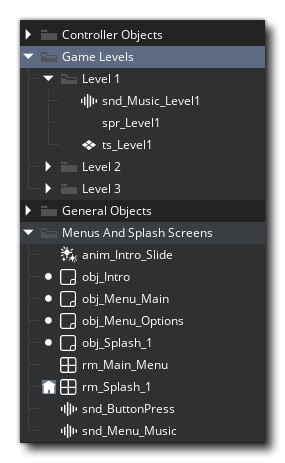
To add a new asset to the list you can use the Add Asset
button at the top of the Asset Browser, or you can open the right
mouse button  menu anywhere in the asset list and
then select the resource to create: 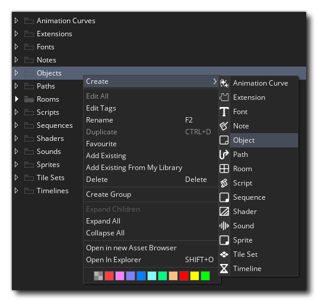
menu anywhere in the asset list and
then select the resource to create: 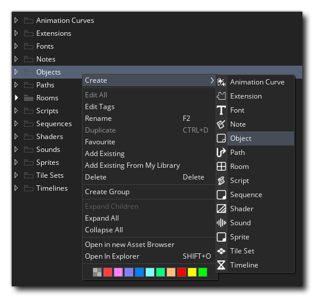
Once the asset has been created it will be opened in the
workspace and you can rename it to something that is appropriate to
your game, but note that asset names can only be alpha-numeric,
cannot start with a number, and can only use the underscore "_" as
an additional character. You can also use the right button menu to
create new folder groups to contain assets using the Create
Group option, and these can be named anything you wish. If you
want to rename any asset or folder group, then you can do a slow
double-click  on them or use the RMB menu option
"Rename".
on them or use the RMB menu option
"Rename".
An important feature of the asset browser is the ability to
colour assets so they are more immediately recognisable within the
list. You can do this by clicking the right mouse button
 on the asset list node on the left and then selecting a colour from
the colour picker palette that pops up. If you do this on a folder,
then this will also colour any asset contained within the
folder:
on the asset list node on the left and then selecting a colour from
the colour picker palette that pops up. If you do this on a folder,
then this will also colour any asset contained within the
folder:
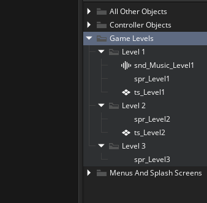
Note that when opening the colour picker palette from a node like
this, you can then right-click  on any of the colour swatches to
generate a custom colour to use.
on any of the colour swatches to
generate a custom colour to use.
Individual assets can also be coloured independently of the
group colour by using the RMB on the asset note or by using the
palette at the bottom of the RMB menu (although this can be
disabled from the Asset
Browser Preferences) and note that you can use  or
or
 /
/  along with the left mouse button
along with the left mouse button
 to select multiple assets and assign the colour to all of them at
once:
to select multiple assets and assign the colour to all of them at
once:
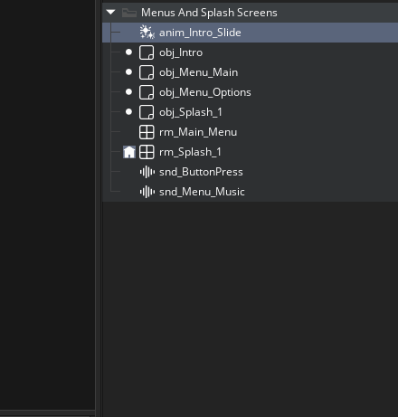
How you colour things is up to you - it can be by asset type, or by
use, or by any other criteria!
One final thing to note with the asset list is that you can
select folders and assets then click  and drag
them to move them out of - or into - any other folder group in the
asset list, and you can also delete any or all of the folder groups
if they are not required, keeping the assset list tidy and only
showing the required elements for the project.
and drag
them to move them out of - or into - any other folder group in the
asset list, and you can also delete any or all of the folder groups
if they are not required, keeping the assset list tidy and only
showing the required elements for the project.
Information
The information bar at the bottom of the Asset Browser shows you how many assets are in the asset list in total, as well as the number of assets that are currently selected. This section will also show any tags that have been used to filter the asset list (see below for more information on tags), and you can click on them to remove the tag filter if required. 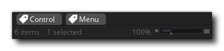
Zoom Controls
The Zoom Controls can be used to make the contents of the asset
browser larger or smaller, with a minimum of 50% to a maximum of
250% of the current DPI of the GameMaker Studio 2 IDE. If
you wish to reset this to the default 100%, then simply
double-click  on the percentage value to the left of
the slider. Note that there are a couple of prefernces available to
deal with how this works in the Asset
Browser Preferences.
on the percentage value to the left of
the slider. Note that there are a couple of prefernces available to
deal with how this works in the Asset
Browser Preferences.
Tags
As mentioned in various of the sections above, the asset browser gives you the ability to add tags to individual assets as well as to group folders. Tags are a very powerful tool, not only for organising and filtering the assets listed in the asset browser, but also when programming your game in general, as you can use assigned tags in code.
To create a tag you need to use the RMB menu on either a folder
group or an asset and then select the Edit Tag option. This
will bring up the Tag Editor where you can type in the tag you want
to use, and then press  to apply it:
to apply it:
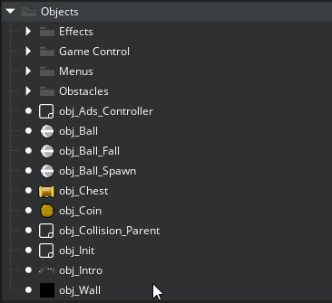
You can assign multiple tags to a single item, and you can also
use  or
or  /
/
 along with the left mouse button
along with the left mouse button  to select multiple assets and
assign a tag to all of them at once. You can also add a tag to a
folder group, which will apply it to all the assets within the
folder. Once added, all tags will be visible under the Quick
Access menu and also in the Filter options (as explained
in the sections above), and so can be used to quickly filter the
asset list and show only those items with the chosen tag or
tags.
to select multiple assets and
assign a tag to all of them at once. You can also add a tag to a
folder group, which will apply it to all the assets within the
folder. Once added, all tags will be visible under the Quick
Access menu and also in the Filter options (as explained
in the sections above), and so can be used to quickly filter the
asset list and show only those items with the chosen tag or
tags.
It is important to note that assets that are created while tags are part of the active filter will be given those tags automatically. This means that if you are viewing all assets under the "Level 1" tag - for example - all new assets created with this filter active will also have the "Level 1" tag added to them upon creation.
Finally, tags can also be used in your project code to identify any asset and then act on it, making it a very powerful tool as you can code behaviours based on a tag or group of tags. For example, imagine you have a project with a "Die On Touch" tag. When programming the project, you can check this tag and code functionality that is appropriate, then later the artists and level designers can create new assets of any type and tag them with the "Die On Touch" tag then use the asset when designing a level. Any code that has been programmed already to use this tag will automatically include these new assets.
For more information on using tags in the project code, please see the section on Assets And Tags.
RMB Menu
When working with the Asset Browser, you can use the right mouse
button  on any resource or folder to open a
menu of options: 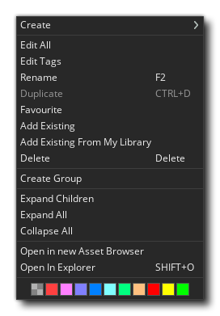
on any resource or folder to open a
menu of options: 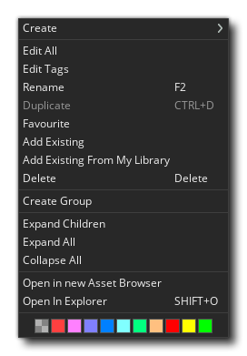
The exact options available to you will depend on the context that has been clicked, and below we show the contents when the menu is opened on an asset or folder group in the Asset List (other contexts will show some of these but not all):
- Create - Create a new asset. On selecting this you will
be presented with a list of the available asset types that can be
created for you to select one. Note that if you open this menu on a
specific asset, there will be an additional option to create a
resource if the same type listed just below so you don't have to
look for the asset type in the list.
- Edit (All) - Open the resource properties editor for the
selected asset(s) or folder group (note that you can double click
on a single asset too to open it for it editing).
- Edit Tags - This will open the Tag editor where you can
add or remove tags to the selected asset(s) or folder group(s).
- Rename - Rename the asset or the folder group.
- Duplicate - Create a duplicate of the asset or assets
that have been selected.
- Favourite - Flag an an asset or assets as being a
favourite, adding it to the Quick Access section at the top of the
Asset browser.
- Add Existing - Add existing assets from a different
GameMaker Studio 2 project folder. Please note that assets
created using a version anterior to 2.3 will require conversion as
the project file format changed with the 2.3 update. This means it
may be preferable to import the entire project and converting
everything then saving it to a new location if the assets are
imported frequently into other projects.
- Add Existing From My Library - Add assets to the asset
list from an item in your Marketplace library. Please note that
Marketplace assets created using a version anterior to 2.3 will
require conversion as the project file format changed with the 2.3
update.
- Delete - Delete the selected asset(s) from the project.
This cannot be undone!
- Create Group - Add a new folder group to the asset
list.
- Expand Children - Expand the currently selected folder
group along with any sub-folders it may contain.
- Expand All - Expand all the folder groups in the asset
list.
- Contract All - Contract all the folder groups in the
asset list.
- Open In New Asset Browser - This option is only
available for folder groups, and it will open the group in a new
Asset browser window containing only the contents of the parent
group the option was selected for.
- Open in Explorer - This will open the file explorer on
the location of the file that has been stored for the resource in
your project folder.
- Colour Swatches - Here you can select a new colour for the asset to use. If used on a folder group, all assets within the folder will get the chosen colour, and if used on one or more assets, this will override any colour set in for the folder group (unless you have overriden this option in the Asset Browser Preferences).
Asset Types
Now you know how the Asset Browser works, you should get to know the different types of asset that you can add to it. Below we give an overview of each of the different asset types available for you to use in your projects:
An animation curve is a resource that contains one or more curves that represent how a value changes over time, and can use linear interpolation or smooth interpolation to go between values in the curve. The values you set can be between -1 and 1 on the vertical axis and the duration along the horizontal axis is always normalised form 0 to 1, making it easy to target different time ranges using multipliers in your game code. Animation curves are comprised of "channels" and each channel can have it's own curve settings, which permits you to - for example - describe a spacial position with two channels for the x/y position, or a colour gradient with 4 channels to represent a colour format. Animation curve assets can be used when working with sequences and can also be accessed using code, making them a powerful tool when creating your games.
You can find out more about adding animation curves from the section on Animation Curves.
Extensions are additional files and code that you can add to extend the GameMaker Studio 2 functionality as well as add assets to your game from the Marketplace. The format for an extension will vary depending on the final target platform, although in general they are written in C++, C# or JavaScript, which is then parsed using specific functions in GML.
You can find out more about adding extensions from the section on the Extension Editor.
When you want to draw text in your game this text will be drawn in a standard Arial 12 points font by default, but to make more interesting or unique looking texts you will probably want to use different fonts. This is where the font editor is used. Here you can select a font that you have on your computer and import it into GameMaker Studio 2 for use in your game, setting various attributes like size and weight or style. Once imported and added as a resource, you can then set it for drawing using the appropriate code or actions.
NOTE: If you are adding fonts to your game, make sure you have the licence necessary to re-distribute it, unless it is public domain or copyright free.
The RMB menu for fonts contains the following option (as well as those listed further down this page):
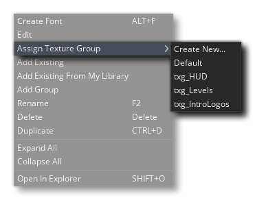
- Assign Texture Group - When you select this option, you will be presented with a list of the available texture groups, and you can then choose one to add the font to or create a new one, if required. If multiple fonts are selected in the Asset Browser - or you have selected a group folder of fonts - then all of them will be added to the chosen texture group. See here for more information on texture groups.
You can find out more about adding fonts from the section on the Font Editor.
Notes are simply code editor windows which permit you to write anything. They are designed as a place to keep code snippets, game information, to-do lists, team communications, etc...
You can find out more about adding notes from the section on the Notes Editor.
Objects are a special resource that we use to control aspects of a game and to do specific things. Most of the time they have a sprite associated with them so that you see them in the game room, but sometimes they are used as a "behind the scenes" controller to do things related to the user or for timing, etc... They can be given behaviours and they can react to certain events as well as to each other, and most of the things you see in a game are based on objects and their interactions. Note that we say "based on" because you don't actually place objects directly into the game room, but rather you place instances of these objects, which are basically copies (or clones if you prefer) of the object resource. This is a very important thing to remember as instances and objects are not the same thing and each have their own set of functions that can affect them.
All objects have a set of properties which you can specify in the object editor, like the sprite, whether it uses physics or not, or whether it is a "child" object of another one. They also have a series of built-in variables that can then be used in actions, scripts and code. These built-in variables are used to define the position of the instance when placed in the game room, the animation speed, the direction of movement and a whole host of other things. To control how the object behaves over time, each game frame is split into a series of events, so you can add code or actions into a specific event and it will only run when the event is triggered, and events can be triggered by things like mouse button presses or collisions with other instances.
Objects are in a very real sense the building blocks of your game, and together with rooms will form the core of any project that you create.
The RMB menu for objects contains the following option (as well as those listed further down this page):
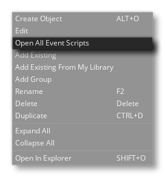
- Open All Event Scripts - Selecting this option will open all the assigned events for the object in a new workspace as script tabs.
You can find out more about adding objects from the section on the Object Editor.
At some point while creating your games you may need an instance of one of your objects to follow a path through a level. Now, this can be done by simply creating an array of positions within the room and then having the instance move between them, but that can be a chore to set up and is difficult to change, test and adapt for different things. That is when you'd want to create a path resource.
The basic idea of the path resource is rather simple - you define a path by drawing it in the path editor, then you can place an action (or code) in an event of an object to tell the object to follow that particular path in the game room. You can set the speed to follow the path and a number of other actions relating to the position and orientation of the path within the room too.
You can find out more about adding paths from the section on the Path Editor.
All games that you make in GameMaker Studio 2 need at least one room to run (but can have many, many more) , and a room is basically a space where you place instances of the objects that make up your game and where the action of the game will take place. However the Room Editor is one of the most powerful of resources available to you, since it permits you to not only add instances of objects, but to set up the "view" into the game room, add the backgrounds and tiles that are drawn to create the game world, create extra special effects that are independent of the object/instance system, and as well as run code independently of an object. Rooms can also be set to inherit properties from other rooms, meaning that you can create a single room with a load of tiles, for example, and then make another room that inherits these tiles, so that you don't have to re-create them again.
The RMB menu for rooms contains the following option (as well as those listed further down this page):
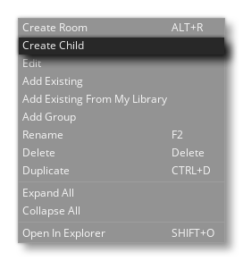
- Create Child - This will create a new room as a child of the room selected. Child rooms are new room resources that inherit the properties, layers and layer contents from the parent room, and will be shown linked to the parent room in the Asset Browser.
You can find out more about adding rooms from the section on the Room Editor.
A script resource is simply a container for one or more functions you have written. For example, say you want to have all your enemy objects create a number of different instances when they die - like some gold, an explosion and some blood as well as play a sound. Now you could add all the required code into each object that requires it, but in general you'd be better off creating a single function in script resource and then calling that. This means that you only have to add one line of code into the objects to call this new scripted function, and if you wish to change something you only need to change it once in the script and all the objects will automatically run the new code, rather than have to go through every object and change the same thing in multiple places.
The RMB menu for scripts contains the following option (as well as those listed further down this page):
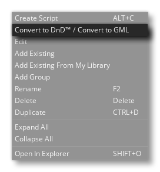
- Convert to DnD™ / GML - This will convert the selected script to DnD™ or GML. If the script is GML, then it will be placed within an Execute Code action, while DnD™ will be translated directly into GML code (as shown in the section Changing DnD™ To Code".
You can find out more about adding scripts from the section on the Script Editor.
A sequence asset is essentially a collection of other resources that perform a dynamic animation over time. They can contain sprites, instances, sounds and other things, and each of these can be set to move or change colour, or start/stop over time within the sequence itself by assigning the assets to specific tracks within the sequence. These tracks can then have different attributes applied to them which can be static or change over time. All editing of a sequence takes place in the Sequence Editor which is comprised of the Canvas - where you place the assets that make up the sequence - along with the Dope Sheet - which is where you add/remove/edit the tracks of the sequence and control how they behave over time. Note that you can have sequences within sequences to create complex animations and effect, and sequences can also be accessed and changed through code to give you as much control as possible over how they will be displayed and used in your game.
You can find out more about adding sequences from the section on the Sequences Editor.
Shaders are a very powerful tool that can be used to manipulate the graphics that your game renders to the screen, permitting incredibly fast effects that can range from, for example, adding a subtle colour hue to a sprite, right up to full screen distortion effects. Basically it's a two-part program that runs directly on the graphics card itself, making it very fast since the GPU is doing all the work and freeing up CPU cycles for your game code. The full shader is comprised of a vertex shader program, and a fragment shader program (also known as a pixel shader). Both of these tiny programs work together in order to manipulate what the graphics card renders to the screen. This then permits you to manipulate in real time the position, colour, and alpha values that are actually rendered into the display buffer.
GameMaker Studio 2 supports the following shader languages:
Shader Language Target Platform GLSL ES All target platforms GLSL Mac and Ubuntu (Linux) HLSL11 Windows, UWP, XboxOne PSSL Playstation 4
The RMB menu for shaders contains the following option (as well as those listed further down this page):
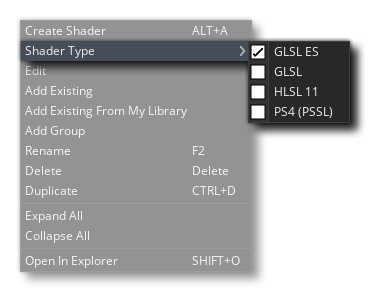
- Shader Type - Here you can set the type of shader language that is being used for the shader resource.
You can find out more about adding shaders from the section on the Shader Editor.
Sound is an important part of any game, both for adding depth to the gameplay and giving feedback in the form of sound effects, and for adding atmosphere in the form of music. GameMaker Studio 2 accepts WAV, MP3 and OGG format files.
In general, WAV files are used for any short sound effects as even though they are generally larger files they will play instantaneously due to the fact that they do not need any type of decoding for playing. MP3 and OGG files should be used for background music or any effect that plays over a longer period of time or that has a rather large file size. These files are much smaller than a WAV file and but do have a CPU overhead associated with them as they have to be decoded before being played.
The RMB menu for sounds contains the following options (as well as those listed further down this page):
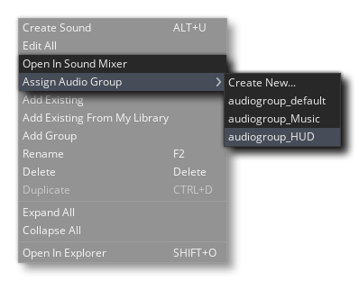
- Open In Sound Mixer - This will open all the selected sounds in the Sound Mixer.
- Assign Audio Group - When you select this option, you will be presented with a list of the available audio groups, and you can then choose one to add the sound to or create a new one, if required. If multiple sounds are selected in the Asset Browser - or you have selected a group folder of sounds - then all the sounds will be added to the chosen audio group. See here for more information on audio groups.
You can find out more about adding sounds from the section on the Sound Editor.
Sprites are generally the visual representations of objects within the games you create. As such, a sprite is an image drawn using the GameMaker Studio 2 Image Editor, or made with any external drawing program and imported into GameMaker Studio 2. The image used doesn't have to be of a single static thing either... it can be a "strip" image too, ie: multiple images in a a single file which can then be used to make a single animated sprite. For example, the following 10 images form a sprite for a character who is waving his arms while skydiving.
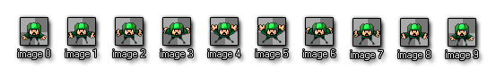
And the actual finished animation would look like this when placed in a game:
A sprite like this is usually a PNG format file, but GameMaker Studio 2 will also accept vector sprites in SWF format, and Spine sprites in JSON (with their accompanying texture atlas file).
The RMB menu for sprites contains the following options (as well as those listed further down this page):
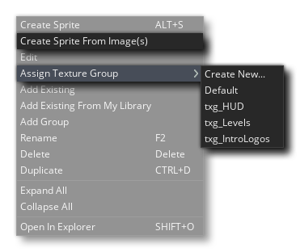
- Create Sprite From Image(s) - Selecting this option will open a file explorer where you can select one or more images from which to create a sprite. If you select multiple images, then the sprite will be created with multiple frames, one for each image selected.
- Assign Texture Group - When you select this option, you will be presented with a list of the available texture groups, and you can then choose one to add the sprite to or create a new one, if required. If multiple sprites are selected in the Asset Browser - or you have selected a group folder of sprites - then all the sprites will be added to the chosen texture group. See here for more information on texture groups.
You can find out more about adding sprites from the section on the Sprite Editor.
Tile sets are taken from the sprite resources, but are classified as a separate resource since GameMaker Studio 2 will handle them differently when creating your game. Basically a tile set is a single image that GameMaker Studio 2 will break into separate sections based on the values you give for the various settings. You can then use these in the room editor (or procedurally through code) to generate a tile map in your room. They are great for designing any static items in your room, like terrain, walls, backdrops, etc... as they don't have the same overhead that objects have.
Above is an example sprite that would be used as a tile set to create walls. As you can see, it can be "split" into 64x64pixel chunks, which would then placed into the room editor.
NOTE: Tiles are always square, so if you need anything other than that, you should be using an instance with a sprite or an asset layer in the room editor.
The RMB menu for tilesets contains the following option (as well as those listed further down this page):
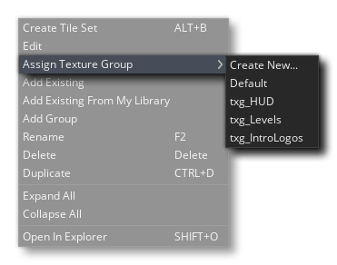
- Assign Texture Group - When you select this option, you will be presented with a list of the available texture groups, and you can then choose one to add the tileset to or create a new one, if required. If multiple tilesets are selected in the Asset Browser - or you have selected a group folder of tilesets - then all of them will be added to the chosen texture group. See here for more information on texture groups.
You can find out more about adding tilesets from the section on the Tile Set Editor.
In most games you will want certain things to happen at certain moments in time. Now, you can try to achieve this by using the Alarm Events in an instance, but when things get too complicated this won't work any more, especially as you are limited to only twelve alarms. That's why we have the timeline resource. In a timeline you specify which actions must happen at any specific moment in game time, and you can use all the actions that are available for an object in its different events as well as code. Once you create a time line you can then assign it to an object, and the instance of that object will then execute the actions and code at the indicated moments of time when placed or created within a room.
You can find out more about adding timelines from the section on the Timeline Editor.

If you want a more in-depth guide as to how to use the different editors listed above then you please refer to the following section of the manual: